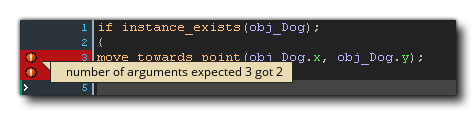

In GameMaker Studio 2 können Sie an verschiedenen Stellen Code verwenden, von Objekten über Räume bis hin zu Instanzen. Außerdem gibt es eine Reihe von integrierten Funktionen, die Ihnen das Leben bei der Programmierung mit GML oder Drag & Drop erleichtern. Es ist jedoch häufig erforderlich, dass Sie eigene Funktionen erstellen, um eine bestimmte Aufgabe zu erledigen oder einen großen Codeabschnitt zu einem besser verwaltbaren Block zusammenzufassen oder sogar einen bestimmten Codeblock an vielen verschiedenen Orten wiederverwenden zu können. Aus diesem Grund können Sie mit GameMaker Studio 2 Skripts erstellen.
ANMERKUNG: Während sich dieser Abschnitt mit Skripts befasst, ist das Codefenster, in das Sie Ihre Skripts schreiben, das gleiche wie das für Ereignisse, Raum- oder Instanzerstellungscode oder Shader, und die hier beschriebene Funktionalität gilt für alle.HINWEIS: Diese Seite verweist auf GML zum Schreiben von Skripts. Sie können Skripts jedoch auch mit Drag and Drop erstellen (siehe hier ). Unabhängig davon, wie Sie Ihr Projekt programmieren, die Informationen auf dieser Seite gelten weiterhin für den Editor selbst.
Skripts werden mit der Skriptsprache GML geschrieben (weitere Informationen finden Sie im Abschnitt zur GML-Übersicht ), der von GameMaker Studio 2 verwendeten integrierten Programmiersprache. Wenn Sie sich mit GameMaker Studio 2 vertraut gemacht haben und es in vollem Umfang nutzen möchten, ist es ratsam, sich mit der Verwendung dieser Sprache vertraut zu machen, da dies Ihre Möglichkeiten beim Erstellen von Spielen erheblich erweitert. Sie können Skripts auch mit Drag and Drop schreiben. Dies erfordert jedoch einen anderen Editor, der im Abschnitt " Action-Skripts" beschrieben wird
Ein Skript (wie jede eingebaute Funktion) kann verschiedene Eingabevariablen annehmen, mit echten, Zeichenfolgen-, booleschen und speziellen Werten all oder noone akzeptiert werden, und diese Eingabevariablen werden im Allgemeinen als Argumente bezeichnet, obwohl sie auch häufig als Parameter bezeichnet werden. Um ein Skript aus einem Objekt oder einer Zeitleiste auszuführen, verwenden Sie den Skriptnamen wie eine Funktion oder mithilfe der GML-Funktion script_execute. Sie können das Skript benennen, indem Sie mit der rechten Maustaste klicken  Sie müssen jedoch die Option Umbenennen auswählen. Beachten Sie jedoch, dass der Skriptname den Skriptregeln für Funktionen entsprechen muss. Sie müssen also mit einem Buchstaben beginnen und nur Buchstaben, Zahlen oder das Unterstrichsymbol "_" enthalten.
Sie müssen jedoch die Option Umbenennen auswählen. Beachten Sie jedoch, dass der Skriptname den Skriptregeln für Funktionen entsprechen muss. Sie müssen also mit einem Buchstaben beginnen und nur Buchstaben, Zahlen oder das Unterstrichsymbol "_" enthalten.
Wie oben erwähnt, können Sie eine Anzahl von Argumenten an ein Skript übergeben (insgesamt 16), und es verwendet diese, um die Aufgabe auszuführen, für die Sie es geschrieben haben. Um dies besser zu verstehen, nehmen Sie zum Beispiel eine Aktion (oder einen Code in GML) und überlegen Sie, wie es funktioniert. Sie platzieren es in einem Ereignis und geben eine Anzahl von Parametern an. Dadurch wird Ihre Instanz etwas bewirken. Skripte sind genau die gleichen, mit dem einzigen Unterschied, dass Sie sie schreiben. Sie können nicht nur Argumente an ein Skript übergeben, sondern Sie können auch ein Skript auffordern, einen Wert zurückzugeben (mithilfe von return Schlüsselwort), damit Sie Berechnungsmethoden (mathematische Methoden) erstellen oder eine Instanz-ID nach einer komplexen Kollisionserkennung oder einer beliebigen Anzahl von Dingen zurückgeben können. Beachten Sie jedoch, dass das Skript mit Hilfe von return beendet wird und daher kein Code ausgeführt wird, nachdem es verwendet wurde. Dies bedeutet, dass einige Überlegungen zur Strukturierung der Skripts erforderlich sind.
Wenn Sie zum ersten Mal eine Ressource erstellen, wird das Skripteditorfenster mit den folgenden Optionen geöffnet:
Der Skript-Editor wird in einem Fenster mit Registerkarten am oberen Rand geöffnet, damit Sie mehrere Skripts in einem Fenster anzeigen können (dieses Verhalten kann jedoch in den Voreinstellungen geändert werden, um jedem Skript ein neues Fenster zu geben). Sie können klicken
Ziehen Sie das Skript in ein Skript und verschieben Sie es, um die Registerkarten neu anzuordnen. Wenn Sie möchten, können Sie es aus dem aktuellen Fenster ziehen und im Arbeitsbereich platzieren, um ein neues Fenster für dieses Skript zu erstellen (oder es einem anderen Fenster hinzufügen ), und Sie können den Skript-Editor auch maximieren, um einen neuen Arbeitsbereich zu erstellen. Wenn Sie eine Skriptregisterkarte aus dem IDE-Fenster ziehen, wird eine neue IDE für diese Skriptressource erstellt, die wie das Hauptfenster verwendet werden kann.
Wenn Sie Code aus einem Objektereignis im Skripteditor bearbeiten und den Skripteditor maximiert haben oder ihn in einem separaten Fenster oder Arbeitsbereich haben, klicken Sie mit der rechten Maustaste
Das Editor-Menü enthält einige zusätzliche Optionen:
- In Arbeitsbereich wiederherstellen: Dadurch wird der Skript-Editor aus dem Status maximiert / Arbeitsbereich entfernt und mit dem Objekt im Arbeitsbereich neu verkettet.
- Gehe zu Objekt: Dies bringt Sie zu dem Arbeitsbereich, in dem sich das Objekt mit dem Code befindet, und konzentriert sich auf das Objekt.
- Ereignis hinzufügen / öffnen: Hiermit können Sie dem Objekt, zu dem das aktuelle Skript gehört, ein neues Ereignis hinzufügen. Im Skript-Editor wird für das hinzugefügte Ereignis eine neue Code-Registerkarte geöffnet. Wenn das ausgewählte Ereignis bereits Code enthält, wird dieser in einer neuen Registerkarte geöffnet.
Informationen zum Rest des Rechtsklicks
Die Rinne wird verwendet, um die Zeilennummern für Ihren Code anzuzeigen und bestimmte Informationen zu übermitteln. Wenn Sie Fehler machen oder den Code falsch konstruieren, informiert Sie die GameMaker Studio 2 IDE über das Problem, indem Sie die Codezeile, die das Problem verursacht, durch ein rotes Ausrufezeichen kennzeichnen
. Sie können dann mit der Maus über das Symbol fahren, um eine kurze Beschreibung des Problems zu erhalten: 
Die Rinne markiert auch jede Zeile des Skripts, dem ein Haltepunkt hinzugefügt wurde. Ein Haltepunkt ist einfach eine Stelle im Skript, an der das Debug-Modul die Ausführung Ihres Spiels anhalten soll, wenn es erreicht ist. Sie können einen Haltepunkt von jeder Zeile eines Skript- oder Objektereignisses aus umschalten, indem Sie " f9 " drücken oder mit der rechten Maustaste klicken
Schließlich werden in der Rinne auch alle mit Lesezeichen versehenen Elemente angezeigt. Um eine Codezeile mit einem Lesezeichen zu versehen, halten Sie einfach die Taste gedrückt
/
+
+ Number (von 0 bis 9), und Sie können von jeder beliebigen Stelle in der IDE zu dieser Codezeile zurückkehren, indem Sie einfach verwenden
Während der Arbeit im Skripteditor können Sie drücken
Hier können Sie eine lokale Suche nach dem von Ihnen eingegebenen Suchbegriff durchführen. Nachdem Sie Ihren Suchbegriff eingegeben haben, können Sie die Pfeile oben rechts im Suchfenster verwenden, um im Skript von einem gefundenen Begriff zum nächsten zu springen. Sie können die Art der Suche ändern, indem Sie die folgenden Schaltflächen aktivieren:
Nur ganzes Wort: Wenn Sie diese Option aktivieren, werden durch die Suchfunktion nur die Zeichenfolgen hervorgehoben, die mit der gesamten Eingabezeichenfolge übereinstimmen. Zum Beispiel, damit eine Suche nach „random“ wird sich zeigen alle Wörter aus, die diese Zeichenfolge enthalten - wie irandom(), oder randomise() - während es Makel auf würde nur die Funktion zeigen random(). Case Sensitive: Wenn diese Option umgeschaltet wird, werden Sie sagen, GameMaker Studio 2 nicht nur den Inhalt des Suchbegriffs zu überprüfen, aber die zu Fall. Zum Beispiel, wenn Sie einen Sprit namens „spr_Dog“ und eine Suche nach „Hund“ mit umschalten aus, dann wird die Sprite - Zeichenfolge hervorgehoben werden, aber wenn der Knebel ist, dann wird es nicht da „Dog“ ist nicht länger als das gleiche wie "Hund". Wenn Sie das Suchfenster mit geöffnet haben
um es zu öffnen. Nach dem Öffnen können Sie eine Zeichenfolge eingeben, die zum Ersetzen einer bestimmten Suchzeichenfolge verwendet wird. Verwenden Sie dazu die folgenden Schaltflächen, um die Aktion auszuführen:
Als Nächstes ersetzen: Durch Klicken auf diese Option wird die nächste im Skript gefundene Suchzeichenfolge durch die angegebene Ersetzungszeichenfolge ersetzt. Beachten Sie, dass der Begriff "nächste" als der nächste nach der aktuellen Cursorposition betrachtet wird. Sie können mit den Pfeiltasten oben rechts im Suchfenster zu anderen wechseln. Alle ersetzen: Durch Klicken auf diese Option werden alle Beispiele der Suchzeichenfolge innerhalb des Skripts durch die angegebene Ersetzungszeichenfolge ersetzt. Wenn Sie eine globale Suche durchführen möchten (z. B. das gesamte Projekt und nicht das aktuelle Skript durchsuchen), können Sie drücken
Im Hauptskript-Editor schreiben Sie Ihren gesamten Code, um das Skript zu erstellen oder ein Objektereignis zu füllen. Skripts und Codeereignisse werden gemäß den allgemeinen Regeln für die GML-Syntax geschrieben (weitere Informationen finden Sie im Abschnitt zur GML-Übersicht ). Sie können beim Schreiben Ihrer Skripts Hilfe vom Fenster für die automatische Vervollständigung erhalten:
Dieses Fenster wird geöffnet, während Sie Ihren Code schreiben (normalerweise nach einer kurzen Pause, dies kann jedoch in den Voreinstellungen festgelegt werden ) und gibt Ihnen eine Auswahl von "am besten passenden" Antworten in alphabetischer Reihenfolge. Während Sie den Code-Editor verwenden, können Sie auf klicken
dann klick
Es ist erwähnenswert, dass Sie Ihren Code auf verschiedene Arten kommentieren können. Das Kommentieren Ihres Codes ist sehr wichtig für die Aufrechterhaltung der Produktivität, da er die Dinge klar hält und Abschnitte des Codes so trennt, dass es offensichtlich ist, was jeder Teil tut und warum er vorhanden ist. Das bedeutet auch, dass Sie, wenn Sie in einem Team arbeiten, Notizen für andere Mitglieder hinterlassen können und dass diese genau wissen, was Sie getan haben oder wozu ein bestimmter Codeabschnitt bestimmt ist. Auch wenn Sie ein Solo-Entwickler sind, ist es wichtig, Kommentare für Ihren Code zu hinterlassen, vor allem, wenn Sie das Projekt verlassen müssen und zu einem späteren Zeitpunkt darauf zurückkommen.
Das Kommentieren Ihres Codes ist einfach, da Sie nur " // "vor einer beliebigen Textzeile oder Sie können ganze Absätze auskommentieren, indem Sie" /* text here */ ". Es gibt sogar zwei Tastenkombinationen, um ausgewählte Codezeilen zu kommentieren und zu kommentieren:
Skripts können auch bestimmte Kommentare im JSDoc- Stil hinzugefügt werden, sodass sie bei Verwendung in Ihrem Code zusammen mit ihren Argumenten und anderen Details automatisch vervollständigt angezeigt werden. Weitere Informationen hierzu finden Sie im Abschnitt JSDoc-Skriptkommentare. Beachten Sie, dass Skriptkommentare von der To-Do-Liste formatiert und analysiert werden können, sodass Elemente automatisch zur Liste hinzugefügt werden können (weitere Informationen finden Sie hier ).
Neben Kommentaren können Sie auch spezielle verwenden #region Tags, um einen Codeabschnitt für Code Folding zu markieren. Wie das funktioniert ist, dass Sie eine hinzufügen #region tag (zusammen mit einem beliebigen Kommentartext) an den Anfang eines Codeabschnitts setzen und dann einen entsprechenden hinzufügen #endregion tag am unteren Rand des Abschnitts und dann können Sie den Code "falten", dh: Sie können ihn ausblenden, um die Anzahl der im Editor sichtbaren Codezeilen gleichzeitig zu reduzieren:
Der eigentliche Code sieht ungefähr so aus:
#region This is an example region
width = sprite_get_width(sprite);
height = sprite_get_height(sprite);
xoff = sprite_get_xoffset(sprite);
yoff = sprite_get_yoffset(sprite);
#endregion Further comment here if requiredWie Sie vielleicht bemerkt haben, sind Teile des Skripttextes farbig. Der Skript-Editor "kennt" vorhandene Objekte, eingebaute Variablen und Funktionen usw. und färbt sie entsprechend ein. Die Farbcodierung hilft dabei, Fehler zu vermeiden, da Sie sofort erkennen können, ob Sie einen Namen falsch geschrieben haben oder ein Stichwort als Variable verwenden oder einen Syntaxfehler haben. Wenn Sie die Farbcodierung jedoch nicht mögen, können Sie sie in den Voreinstellungen ein- und ausschalten (Sie können auch F10 verwenden) sowie die verwendeten Farben anpassen.
Sie können mit der rechten Maustaste klicken
Neben den regulären Funktionen, die Sie erwarten, Codezeilen ausschneiden, kopieren und einfügen, haben Sie auch die Möglichkeit, ausgewählten Text zu kommentieren oder zu kommentieren, Einzüge hinzuzufügen oder zu entfernen sowie das Codefenster in 1, 2 oder 3 separate Bereiche aufzuteilen (Beachten Sie, dass die Optionen für #regions ist nicht verfügbar, wenn Sie im bearbeiteten Code keine definiert haben). Diese letzten Optionen teilen das Fenster in verschiedene Teile auf, in die Sie ein Skript ziehen und neben den anderen zum Vergleichen und Bearbeiten anzeigen können.
Dies ist ausnahmsweise nützlich, um zwei Skripts zu vergleichen oder verbundene Skripts gleichzeitig anzuzeigen, ohne dass ein weiteres Fenster benötigt wird oder ständig zwischen Registerkarten gewechselt werden muss. Die anderen Optionen in diesem Menü bestehen darin, einen Haltepunkt für die Verwendung mit dem Debugger umzuschalten und den GML-Code in DnD™ oder umgekehrt zu konvertieren. Beachten Sie, dass bei der Konvertierung von Code in DnD™ keine einzelnen Aktionen für jede Codezeile erstellt werden, sondern eine einzige Code-Aktion verwendet wird, um alles, was zuvor im Ereignis oder Skript enthalten war, zu speichern.
Ein weiteres sehr nützliches Werkzeug, das Sie beim Bearbeiten Ihrer Skripts zur Verfügung haben, ist die Verwendung von Code-Snippets. Durch Drücken F4 Sie öffnen das Code-Snippet-Popup, in dem Sie eine der häufig verwendeten Codemethoden auswählen können. Sie können auch Ihre eigenen Code-Snippets definieren, wenn Sie möchten, indem Sie sie in dem Verzeichnis speichern, in dem Sie GameMaker Studio 2 an folgendem Speicherort installiert haben: \GameMaker Studio 2\TextEditor\snippets.txt. Sie können diese Datei mit einem beliebigen Texteditor nach den folgenden Regeln bearbeiten:
- Jedes Snippet befindet sich in einer separaten Zeile (es sollten keine Leerzeilen vorhanden sein).
- Jedes Snippet beginnt mit dem Namen des Snippets (der im Menü angezeigt wird), gefolgt vom Doppelpunkt (:), gefolgt vom eigentlichen Code-Snippet.
- Verwenden Sie $ für eine neue Zeile und setzen Sie den Text, der ausgewählt werden muss, zwischen | Symbole.
In den Beispielen, die sich bereits in der Datei befinden, erfahren Sie, wie sie gemäß den obigen Regeln eingerichtet wird. Es wird dringend empfohlen, eine Sicherungskopie davon zu erstellen, bevor Sie Änderungen vornehmen, und auch alle Änderungen, die Sie an der Datei vornehmen, zu sichern Wenn das Programm neu installiert oder aktualisiert werden soll, setzen Sie die Änderungen zurück, die Sie vornehmen, und können die Sicherung erneut verwenden, um sie erneut auszuführen.
Die Informationsleiste am unteren Rand der IDE zeigt Ihnen die aktuelle Zeilennummer und die Position entlang der Linie an. Dort können Sie auch den Code-Helper sehen, eine Textzeile, die die gerade bearbeitete Funktion zusammen mit den erforderlichen Argumenten anzeigt. Wenn Sie die Funktion im Editor ausfüllen, werden die Argumente hervorgehoben, um anzuzeigen, welche Sie gerade bearbeiten. Wenn Sie die JSDoc-Skriptkommentare innerhalb eines benutzerdefinierten Skripts verwendet haben, werden die von Ihnen bereitgestellten Informationen auch hier angezeigt.


Bitte beachten Sie, dass, wenn Sie für Web entwickeln (dh: Targeting HTML5), dann gibt es ein zusätzliches Skript - Protokoll, das Sie verwenden können, die ein Skript Namen Vorwort ist mit gmcallback_, zum Beispiel:
gmcallback_create_button
Die Verwendung des obigen Skriptnamens würde bedeuten, dass das Skript gmcallback_create_button wird nicht verschleiert und kann daher in JavaScript-Erweiterungen und anderen Bereichen Ihres Spiels verwendet werden, z. B. bei der Verwendung von clickable_* Funktionen.